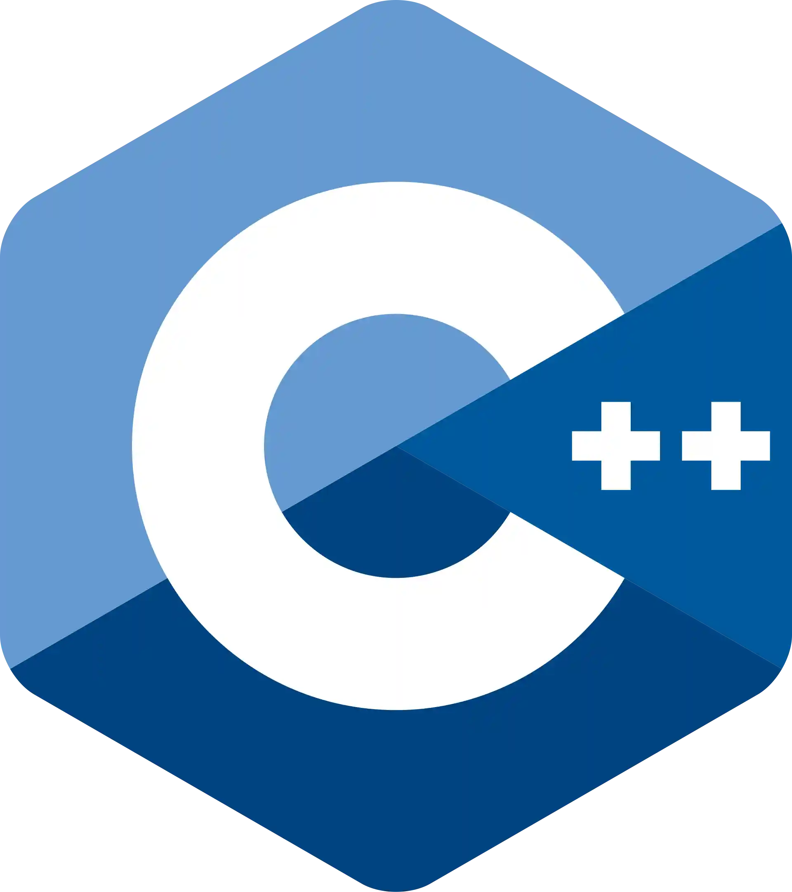

Personal Summary
I'm a mechanical engineering major at San Francisco State University. I'm currently a part of a resarch project at SFSU and I have meaningful positions at two thriving orgnizations as well. I am passionate about my engineering work no matter the setting. I take pride and use my detail orientation to perfect personal and educational projects. I have been working on numerous robotics and engineering project over the last year which are shown in the portfolio page. My interest falls into robotics engineering, thus I have been working on two robotics projects, one as part of a class and personal project, the other being part of Chomp City Combat Robotics at SFSU.


Relevant Projects
This project is a product of my participation and work as part of Chomp City Robotics at SFSU. We were aiming to design and fabricate 1 lb (Plant weight) combat robots to compete against other universities at robotics competitions.
The main goal was to try and design the most effective robot based on material type, 3D printing methods, drive train construction, electrical components, and weapon design. Starting out looking for inspiration based on online and then went in a new direction to build a completely custome flipper robot. Choosing a flipper robot as I hypothesized that a flipper robot would be more reliable and easier to maintain that other weapon types.
Beginning design in Fusion a complete CAD model of the robot was created, then beginning 3D printing and completing test assemblies to check if any parts of the model required alteration. After multiple test prints perfecting the robots designed parts, finals prints were made with optimal print settings. After printing, the next step was electrical assembly. The main components used were a Maleki Nano reicever and electronic speed controller (ESC), a 1/8 scale servo for weapon activiation, N20 DC drive motors, a 2S lipo battery as well as a power switch and light. When designing the body of the robot, When modeling, precise areas for wiring which would hold the wires in place without the worry of components moving around in difficult combat matches.
In a recent competition held in May 2026 at SFSU, this robot competed in numeous matches where it performed very well. This flipper robot performed its intented attack by using its flipper arm to lift and flip other robots, then disabiling them from moving. Even as this robot design and construction was effect, there are imrp
Project Specs
Robot Weight Class: 1lb (Plant)
3D Printing Material: PLA / TPU
Skills Learned / Used: 3D Print Optimization, Electrical Routing, RC RF control, Rapid Prototyping, Iterative Design
Software Used: Fusion, Prusa Slicer
Videos
This is my final project presentation for ENGR 294, Microcontrollers. In this course I designed and fabricated a custom self-balancing robot using an ESP32 microcontroller, a gyroscope / accelerometer, and stepper motors. This project was completed in less than half a semester from project conceptualizing, to project completion.
A breakthrough project in my robotics journey as this project pushed me to learn new skills and futher developing skills. This project however is still in progress improving control and abilities of this robot.
Project Details
Components: ESP32 Devkit, MPU6050, Nema 17 Stepper Motors, 3S Lipo Battery
Features: Start up Mode, Bluetooth Tuning,
Program Systems: PID, Kalman Filter
Software Used: Fusion, Arduino IDE, Light Blue BLE, Prusa Slicer

This project is a product of my participation and work as part of Chomp City Robotics at SFSU. We were aiming to design and fabricate 1 lb (Plant weight) combat robots to compete against other universities at robotics competitions. The main goal was to try and design the most effective design based on material type, 3D printing methods, drive train construction, electrical components, and weapon design.
Add more detail here — your role, the tech stack, the timeline, interesting decisions you made, or measurable results. This is your chance to tell the full story.
Project Specs
Weight Class: 1lb (Plant)
Weapon Type: Flipper
Material: Aluminum / TPU
CAD Software: Fusion 360

This traffic signal was my first soldering project which I aimed to use as practice for other projects which I would have to solder in the future. This was a fully personnal project which I saw crucial for my personal skills development.
As my first proper soldering project, I make sure I took time to learn how to solder properly. I made sure to ask my mentor many questions which would be helpful in more advanced project I will work on in the future. These skills already came in handy as I worked on soldering my circuit for my self-balancing robot. I learned how important safety practices for soldering, how to get properly contacting solder joints, learned to interpret premade circuits, explored electrical engineering principles in practice, and learned to properly care for soldering tools such as a soldering iron.
Key Elements
Kit: Traffic Light Soldering Kit
Soldering Method: Hand Soldered, Through Hole
Component List: Diodes, Resistors, Transistors, LEDs, IC, Capacitors, Potetiometer, Switch, Battery Mount
Professional Experience.
- Conducted research for a project developing an AI tool for neurodiverse students, researching strategies to use with the tool.
- Contributed to a research paper on neurodiverse students in engineering published to ASEE for an upcoming conference.
- Used multiple databases to find relevant and proven information on ways students have previously used AI platforms, as well as ways to identify and capitalize on students’ strengths.
- Developed an Excel spreadsheet highlighting research findings and summarizing data for development.
- Designed and built custom highly effective plant weight combat robot using CAD, 3d printing, and soldering.
- Helped to organize a robotics competition for 50+ people hosted at SFSU and against other universities.
- Taught numerous members new to project development how to 3d print and implement electronics into their own robot.
- Developing CAD workshops to teach Chomp City members and other SFSU students about CAD design in Fusion and Solidworks.
- Designed and built custom highly effective plant weight combat robot using CAD, 3d printing, and soldering.
- Performed repairs and preventative maintenance to the car wash’s systems of hydraulic, pneumatic and mechanical components requiring specialized tools and skills to ensure proper function.
- Responsibilities include constant customer service and professional sales approaches with customers.
- Volunteered at the SSF public library's STEAM makerspace teaching about the library’s programs including 3d modeling, 3d printing, electronics, and robotics.
- Planned and presented a workshop on 3d modeling and 3d printing for over 40 people.
- Taught people of all ages about programs on a daily basis while helping returning patrons with any questions or needs about materials.